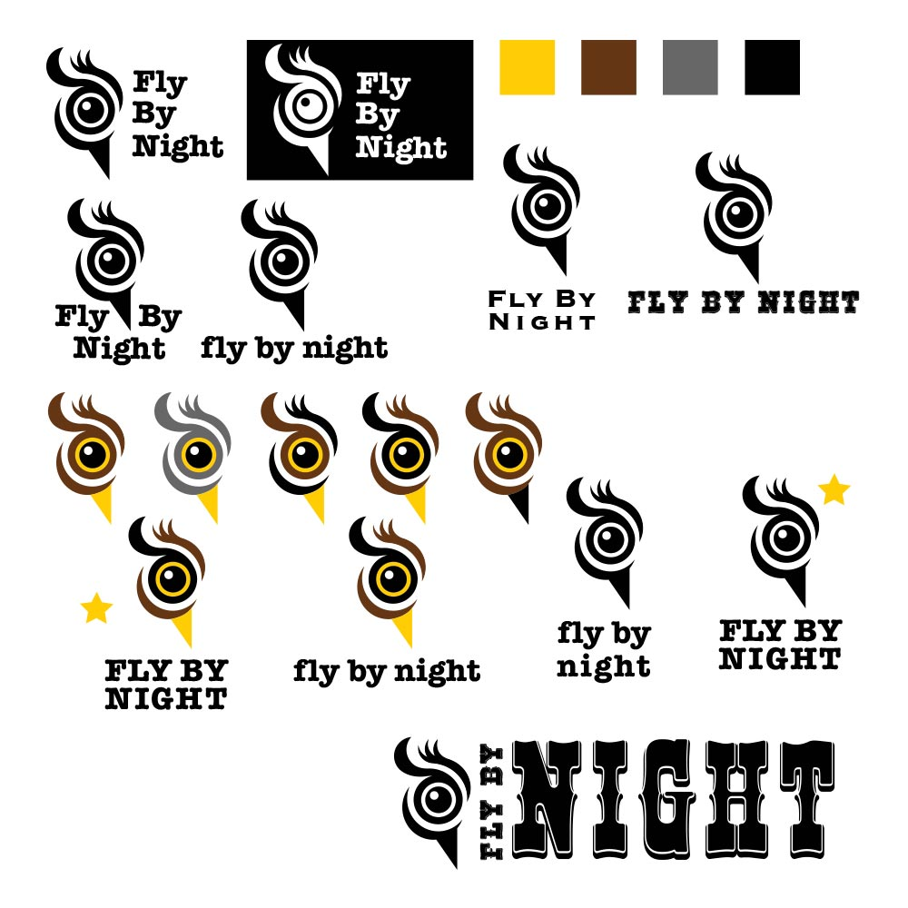

"Fly By Night"
This is a branding assignment that I created for fictional company I made up. I started with logo sketches and boiled close to 75 concepts down to the best 2, and began with revisions. Once I had two strong concepts, I got feedback on each one and proceeded with the stronger of the two. Once I had the logo finalized, I began creating applied uses for the branding, such as letterheads, website and mobile applications, and clothing mockups. Lastly, I created a branding guideline showing how the logo can be used, under what circumastances, with what colours, with what buffer-zones, etc. This is one of the most complete assignments that I have taken on - going from logo sketches to a finalized brand.
